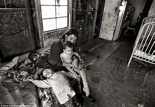

Poverty obstructs my study especially hunger
i crave my stomach and i can not concentrate well in class
Hiv/Aids and other diseases
These diseases makes me stay very worried about my life
it make me to feel lonely like missing my beloved ones
Drug abuse
Drug abuse is a manece it can affect my studiies since socializing with my friends can make make me addicted
How it affects the society
most of these problem affect the society negatively many of youth have now drug traffickers and have turned to do crimminalthings in my society
such as raping
some have become robberrs
How can i make a change
I can change by encouraging youth in my society
I can also provide them some civic education on negative effects of these problem
What can i create for my community
i will come out with a small project or business so that they can be involved to keep them busy and generate small income
